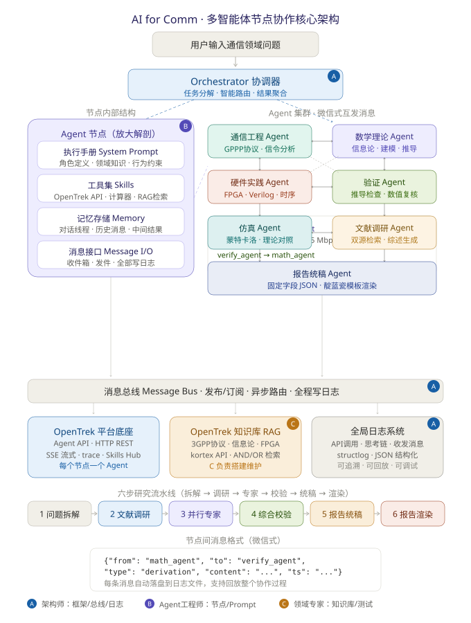

| 版本 v2.0 | 2026 年 8 月 | 项目团队 · 三人组 |
| 01 | 项目构想 | @@PG_ch1@@ |
| 项目定位 · 节点化设计理念 · 三条铁律 · 创新点 | ||
| 02 | 系统架构 | @@PG_ch2@@ |
| 总体架构 · 节点消息格式 · 解题工作流 | ||
| 03 | 风险与对策 | @@PG_ch3@@ |
| 04 | 任务清单 | @@PG_ch4@@ |
| A | 附录 · 参考资源与配套文档 | @@PG_chA@@ |
打造一个面向通信领域的多智能体（Multi-Agent）协作系统。用户提出一个通信相关问题，系统内部的多个专业 Agent 将像一个真实的工程师团队一样——分工协作、互相讨论、交叉验证——最终输出经过验证的高质量答案。
系统以OpenTrek 平台为模型与知识底座，覆盖通信领域的三个学科域：
| 学科域 | 覆盖内容 | 典型问题 |
|---|---|---|
| 通信工程 | GPPP 协议族、信令流程、信道分析 | GTPv2 中 Create Session Request 有哪些必选 IE？ |
| 数学理论 | 信息论、信道容量、编码理论、数学建模 | AWGN 信道 B=20MHz、SNR=30dB，求信道容量 |
| 硬件实践 | FPGA 开发、Verilog/VHDL、时序分析 | 编写 8B/10B 编码器的 Verilog 模块并说明时序约束 |
每个 Agent 是一个独立节点，节点内部包含四个功能模块：
| 模块 | 职责 |
|---|---|
| 执行手册（System Prompt） | 角色定义、领域知识、行为约束——以独立 Markdown 文件维护，改行为不改代码 |
| 工具集（Skills） | OpenTrek API 调用、数值计算器、知识库 RAG 检索 |
| 记忆存储（Memory） | 独立对话线程、历史消息、中间推导结果 |
| 消息接口（Message I/O） | 收件箱与发件能力，所有收发全部写入日志 |
节点与节点之间像人用微信聊天一样互相发消息，而非硬编码的固定流程：
math_agent → verify_agent：「C = B·log₂(1+S/N) = 199.5 Mbps，这是我的完整推导，请检查。」
verify_agent → math_agent：「公式正确，单位换算无误，通过。」或「第三步 dB 换算有误，应为 …」
| 铁律 | 要求 |
|---|---|
| 全链路日志 | 每次 API 调用、每段思考、每条收发消息全部写入结构化日志（JSONL），问题可定位、过程可回放 |
| 测试先行 | 先用一道已知标准答案的简单题跑通双节点链路，验证架构通畅后再扩展复杂场景 |
| Prompt 即配置 | 执行手册为独立 Markdown 文件，三人可并行编辑，无需改动代码 |
系统自上而下分为五层：用户入口层、协调层、智能体协作层、消息总线层、平台与基础设施层。

{
"from": "math_agent", // 发送节点
"to": "verify_agent", // 接收节点
"type": "derivation", // 消息类型
"content": "信道容量推导过程：C = B·log2(1+S/N) ...",
"timestamp": "2026-07-22T16:30:00"
}
消息类型约定：question（提问）、derivation（推导/结果）、feedback（验证反馈）、request（请求协助）。每条消息在路由的同时自动落盘到日志文件。
标准解题流程为四步：① 接收问题 → ② 任务分解 → ③ Agent 求解 → ④ 交叉验证。以信道容量题为例的完整消息流：
| 风险 | 概率 | 对策 |
|---|---|---|
| OpenTrek API 行为与预期不符（SSE 解析异常等） | 中 | 开工先做最小验证；备选改为非流式 stream=false 直接获取完整 JSON |
| 知识库检索命中率低 | 中 | 调整文档切分策略；advancedRules 按文档名过滤精准定位；必要时关键知识全文注入 |
| 多 Agent 对话陷入死循环 | 低 | Orchestrator 设置最大轮次（如 8 轮）强制收敛并输出当前最优结果 |
| OpenTrek 平台内网访问受限 | 低 | 统一在校园网 / VPN 环境下开发；APP_KEY 妥善保管 |
| SSE 流式响应中断或超时 | 低 | 设置 SSE_READ_TIMEOUT=300s；解析器有 MAX_LINES 保护；失败自动重试 |
按阶段推进，完成一项勾选一项。双节点链路验证（阶段三）为整个项目的关键路径，未通过前全员集中攻关。各任务的实操细节见配套文档《AI for Comm 实践手册》。
core/config.pycore/agent_node.pycore/message_bus.pycore/logger.pyprompts/math_system.mdprompts/verify_system.md| 文档 | 内容 |
|---|---|
| 《AI for Comm 实践手册》 | 环境搭建、核心代码、知识库操作、执行手册模板、测试用例、团队分工——本方案书所有落地操作的细节 |
架构图 docs/architecture.svg | 多智能体核心架构矢量图，可直接用于 PPT |
| 资源 | 链接 |
|---|---|
| OpenTrek 控制台 | http:// |
| OpenTrek API 文档 | 项目根目录 PDF（创建session / 发起agent调用 / 知识库检索等） |
| 3GPP 规范下载 | https://www.3gpp.org/specifications-technologies |